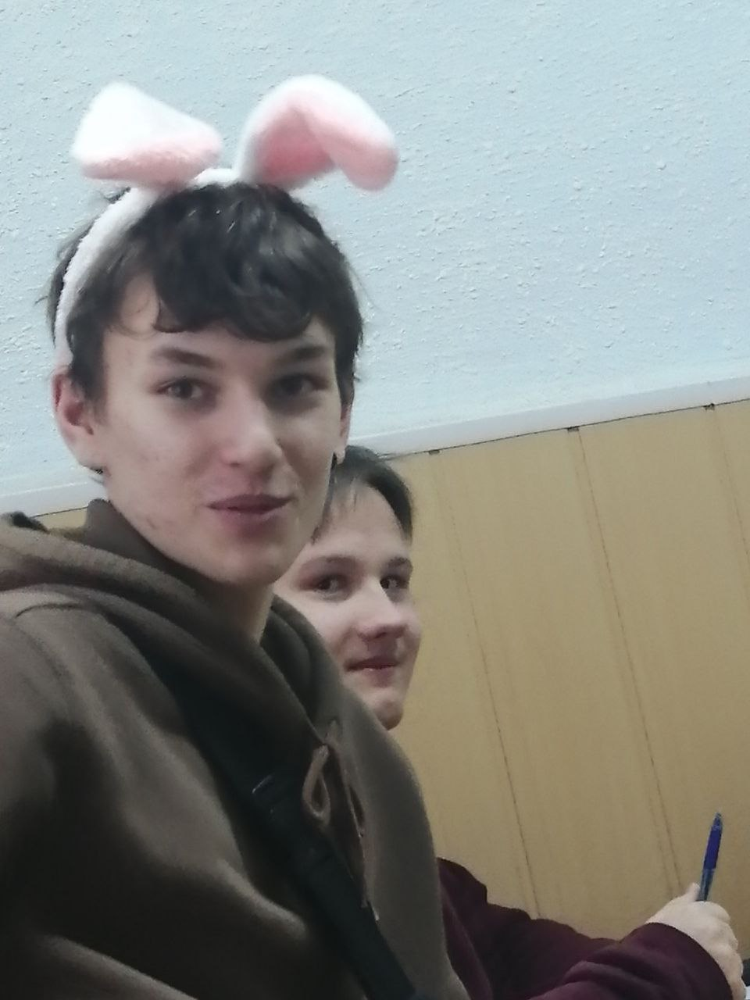
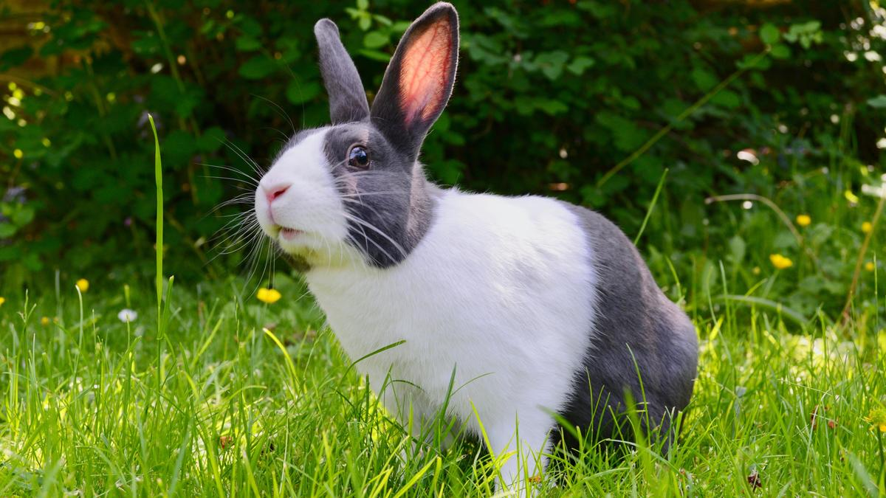
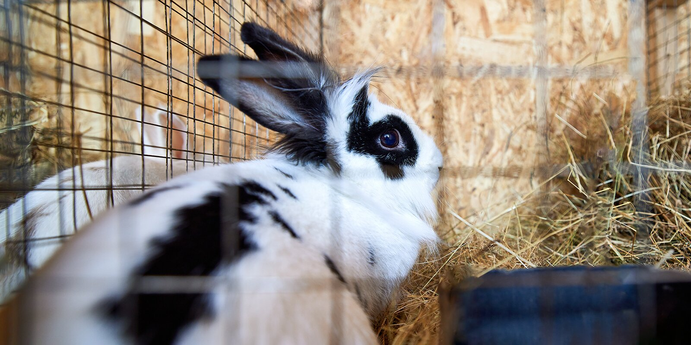

Заяц
Род из семейства зайцевых. Распространены везде, кроме Австралии и Антарктиды, всего около 30 видов. Отличаются длинными ушами, коротким поднятым хвостом, недоразвитыми ключицами, длинными задними лапами, что позволяет им двигаться прыжками. Русак может достигать скорости 70 км/ч.



